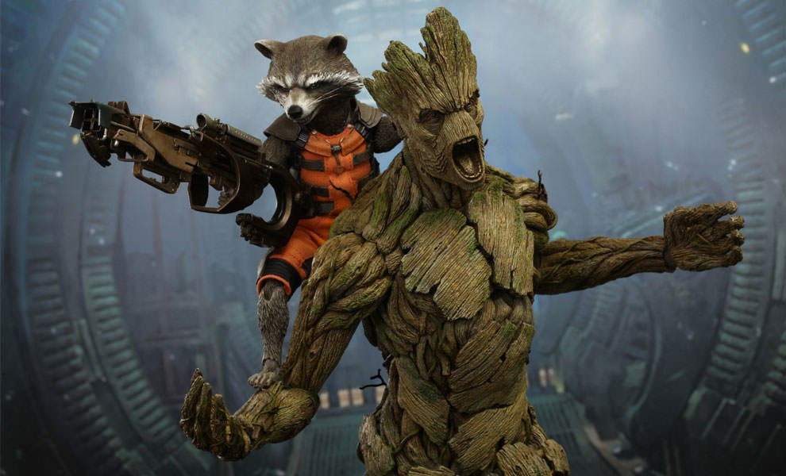
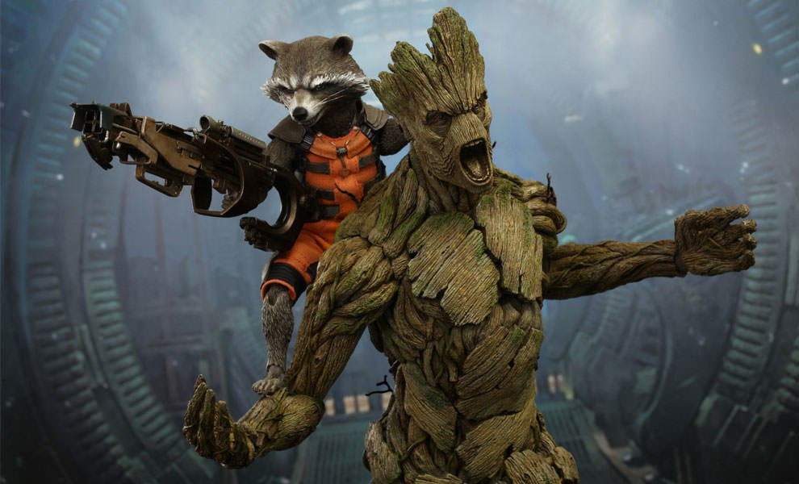

"I am Groot"

Landing Page dedicated to
the gentle giant with a
heartwarming personality
Meet Groot
Who is Groot?
Hey there! Welcome to Groot's world. Let's dive into what makes this lovable Marvel character so special. Groot is an extraordinary being known for his tree-like appearance, but don't let his bark fool you - he's got a heart of gold!

Character bio
Originally from Planet X, Groot belongs to a species of sentient tree-like creatures. Despite his intimidating appearance, Groot is kind, loyal, and protective of his friends. He's known for his selflessness and willingness to sacrifice himself for the greater good.

Powers and Abilities
When it comes to powers and abilities, Groot is truly one-of-a-kind. His incredible strength is matched only by his impressive regenerative abilities. No matter how much he's damaged, he can regrow and heal himself in no time. Talk about resilience!
“We are all groot”
The quote "We are Groot" has a touching story. During a mission, Groot sacrifices himself to protect his friends from imminent danger. The Guardians of the Galaxy witness his selfless act with tears in their eyes.

Image Gallery
 

More Groot's info
For information about Groot search in the following links: